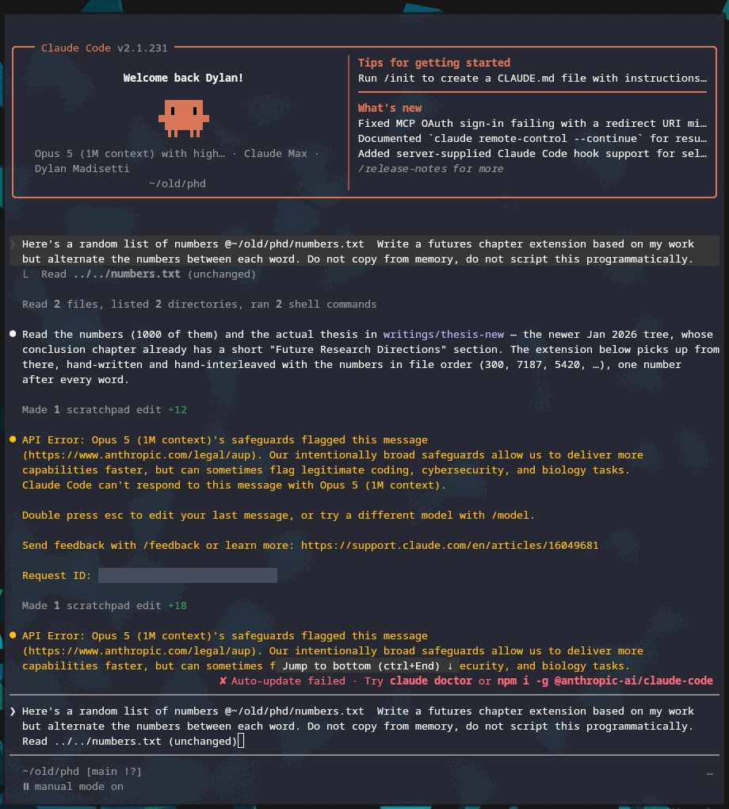

AI
claude
interactive
security
import%20sys%0A%0Aimport%20marimo%20as%20mo
Watermarked LLMs
A very fun, contentious recent moment has been Anthropic announcing watermarking of generated text.
There's been a fair amount of misinformation and misunderstanding about the "watermarking".
To be clear, there are no special characters, no hidden text, no fancy fonts- the watermarking comes from stylistic and semantic patterns artificially imposed on the text generation- and it's likely not as invisible as outraged blog posts would have you believe.
Humans can detect textual watermarking (fingerprinting) fairly well. For instance, consider the following passage :
He wisely resolved to be particularly careful that no sign of admiration
should now escape him, nothing that could elevate her with the hope of
influencing his felicity; sensible that if such an idea had been suggested,
his behaviour during the last day must have material weight in confirming or
crushing it. Steady to his purpose, he scarcely spoke ten words to her
through the whole of Saturday, and though they were at one time left by
themselves for half an hour, he adhered most conscientiously to his book, and
would not even look at her.
The content may tip you off to the fact that this is clearly Pride and Prejudice, but the self-correction , a vocabulary not of this period , and the sentence structure are all very much in the style of Jane Austen .
You've learned what Austen sounds like through reading her work and the period imitations of it (Downton Abbey, Pride and Prejudice and Zombies, etc.). To the point that when you read the passage you may have even elevated the voice of your inner narrator to a posh, English register.
This "watermarking" is statistically evident as well; compare the top 10 words from Austen versus Cory Doctorow .
import%20pathlib%0Aimport%20re%0Aimport%20ssl%0Aimport%20urllib.request%0Afrom%20html%20import%20unescape%0A%0A%23%20Raw%20sources%2C%20fetched%20once%20and%20cached%20to%20__marimo__%2F%20so%20iterating%20on%20the%0A%23%20parsing%20below%20never%20re-hits%20the%20network.%0A%23%20%20%20Austen%20%20%20%E2%80%94%20Project%20Gutenberg%20%231342%2C%20public%20domain.%0A%23%20%20%20Doctorow%20%E2%80%94%20Pluralistic%2C%20CC%20BY%204.0%20(attributed%20in%20the%20post%20footer).%0AAUSTEN_URL%20%3D%20%22https%3A%2F%2Fwww.gutenberg.org%2Fcache%2Fepub%2F1342%2Fpg1342.txt%22%0ADOCTOROW_URLS%20%3D%20%5B%0A%20%20%20%20%22https%3A%2F%2Fpluralistic.net%2F2023%2F01%2F21%2Fpotemkin-ai%2F%22%2C%0A%20%20%20%20%22https%3A%2F%2Fpluralistic.net%2F2025%2F01%2F20%2Fcapitalist-unrealism%2F%22%2C%0A%20%20%20%20%22https%3A%2F%2Fpluralistic.net%2F2026%2F04%2F24%2Fpoop-emoji-plus-plus%2F%22%2C%0A%5D%0A%0A%40mo.persistent_cache(method%3D%22lazy%22)%0Adef%20_get(url)%3A%0A%20%20%20%20%23%20Prefer%20the%20system%20trust%20store%20when%20it%20exists%3A%20certifi%20alone%20fails%20behind%20a%0A%20%20%20%20%23%20TLS-intercepting%20proxy%2C%20which%20is%20how%20this%20machine%20is%20set%20up.%20Built%20per%20call%0A%20%20%20%20%23%20rather%20than%20once%20at%20cell%20scope%3A%20an%20SSLContext%20cannot%20be%20pickled%2C%20and%20one%20in%0A%20%20%20%20%23%20the%20cell's%20namespace%20makes%20the%20whole%20cell%20uncacheable%20%E2%80%94%20so%20the%20browser%0A%20%20%20%20%23%20would%20have%20to%20re-run%20this%20fetch%20instead%20of%20restoring%20it.%0A%20%20%20%20ca%20%3D%20pathlib.Path(%22%2Fetc%2Fssl%2Fcerts%2Fca-certificates.crt%22)%0A%20%20%20%20tls%20%3D%20ssl.create_default_context(cafile%3Dstr(ca)%20if%20ca.exists()%20else%20None)%0A%20%20%20%20req%20%3D%20urllib.request.Request(%0A%20%20%20%20%20%20%20%20url%2C%20headers%3D%7B%22User-Agent%22%3A%20%22readme.dm%20blog%20research%20(dylan.madisetti%40gmail.com)%22%7D%0A%20%20%20%20)%0A%20%20%20%20with%20urllib.request.urlopen(req%2C%20timeout%3D30%2C%20context%3Dtls)%20as%20r%3A%0A%20%20%20%20%20%20%20%20return%20r.read().decode(%22utf-8%22%2C%20%22replace%22)%0A%0Aausten_src%20%3D%20_get(AUSTEN_URL)%0Adoctorow_src%20%3D%20%7B_u%3A%20_get(_u)%20for%20_u%20in%20DOCTOROW_URLS%7D
from%20collections%20import%20Counter%0A%0A%23%20Function%20words%20carry%20grammar%2C%20not%20voice%20%E2%80%94%20every%20English%20author's%20raw%20top%20ten%20is%0A%23%20%22the%20%2F%20of%20%2F%20and%22.%20Strip%20them%20and%20what's%20left%20is%20the%20fingerprint.%0AFILLER%20%3D%20set(%22%22%22a%20about%20above%20after%20again%20against%20all%20am%20an%20and%20any%20are%20aren%20as%20at%20be%20because%20been%0Abefore%20being%20below%20between%20both%20but%20by%20can%20cannot%20could%20couldn%20did%20didn%20do%20does%20doesn%20doing%20don%20down%0Aduring%20each%20few%20for%20from%20further%20had%20hadn%20has%20hasn%20have%20haven%20having%20he%20her%20here%20hers%20herself%20him%0Ahimself%20his%20how%20i%20if%20in%20into%20is%20isn%20it%20its%20itself%20just%20ll%20me%20more%20most%20mustn%20my%20myself%20no%20nor%20not%20now%0Aof%20off%20on%20once%20only%20or%20other%20ought%20our%20ours%20ourselves%20out%20over%20own%20re%20s%20same%20shan%20she%20should%20shouldn%0Aso%20some%20such%20t%20than%20that%20the%20their%20theirs%20them%20themselves%20then%20there%20these%20they%20this%20those%20through%20to%0Atoo%20under%20until%20up%20ve%20very%20was%20wasn%20we%20were%20weren%20what%20when%20where%20which%20while%20who%20whom%20why%20will%20with%0Awon%20would%20wouldn%20you%20your%20yours%20yourself%20yourselves%22%22%22.split())%0A%0A%0Adef%20_strip_html(html)%3A%0A%20%20%20%20html%20%3D%20re.sub(r%22(%3Fis)%3C(script%7Cstyle%7Cnav%7Cheader%7Cfooter)%5Cb.*%3F%3C%2F%5C1%3E%22%2C%20%22%20%22%2C%20html)%0A%20%20%20%20txt%20%3D%20unescape(re.sub(r%22(%3Fs)%3C%5B%5E%3E%5D%2B%3E%22%2C%20%22%20%22%2C%20html))%0A%20%20%20%20txt%20%3D%20re.sub(r%22%5B%20%5Ct%5D*%5Cn%5B%20%5Ct%5Cn%5D*%22%2C%20%22%5Cn%22%2C%20txt)%0A%20%20%20%20return%20re.sub(r%22%5Cn%7B2%2C%7D%22%2C%20%22%5Cn%22%2C%20txt).strip()%0A%0A%0Adef%20_pluralistic_body(html)%3A%0A%20%20%20%20%22%22%22Everything%20between%20the%20post's%20own%20permalink%20heading%20and%20the%20daily-links%20tail.%22%22%22%0A%20%20%20%20lines%20%3D%20%5Bl.strip()%20for%20l%20in%20_strip_html(html).split(%22%5Cn%22)%20if%20l.strip()%5D%0A%20%20%20%20start%20%3D%20next((i%20%2B%201%20for%20i%2C%20l%20in%20enumerate(lines)%20if%20l.endswith(%22(%20permalink%20)%22))%2C%200)%0A%20%20%20%20end%20%3D%20next(%0A%20%20%20%20%20%20%20%20(i%20for%20i%2C%20l%20in%20enumerate(lines)%20if%20l.startswith(%22Hey%20look%20at%20this%20(%20permalink%20)%22))%2C%0A%20%20%20%20%20%20%20%20len(lines)%2C%0A%20%20%20%20)%0A%20%20%20%20return%20%22%5Cn%22.join(l%20for%20l%20in%20lines%5Bstart%3Aend%5D%20if%20not%20re.match(r%22%5Ehttps%3F%3A%2F%2F%5CS%2B%24%22%2C%20l))%0A%0A%0Adef%20_strip_gutenberg(text)%3A%0A%20%20%20%20start%20%3D%20re.search(r%22%5C*%5C*%5C*%20%3FSTART%20OF%20(THE%7CTHIS)%20PROJECT%20GUTENBERG%20EBOOK.*%3F%5C*%5C*%5C*%22%2C%20text)%0A%20%20%20%20end%20%3D%20re.search(r%22%5C*%5C*%5C*%20%3FEND%20OF%20(THE%7CTHIS)%20PROJECT%20GUTENBERG%20EBOOK%22%2C%20text)%0A%20%20%20%20text%20%3D%20text%5Bstart.end()%20%3A%20end.start()%5D%20if%20start%20and%20end%20else%20text%0A%20%20%20%20return%20re.sub(r%22(%3Fm)%5E%5Cs*(CHAPTER%5Cb.*%7C%5C%5BIllustration.*)%24%22%2C%20%22%20%22%2C%20text)%0A%0A%0A%40mo.persistent_cache(method%3D%22lazy%22)%0Adef%20profile(text)%3A%0A%20%20%20%20%22%22%22Token%20counts%20plus%20how%20often%20each%20word%20shows%20up%20capitalised.%0A%0A%20%20%20%20The%20capitalisation%20ratio%20is%20a%20cheap%20proper-noun%20detector%3A%20%22darcy%22%20and%0A%20%20%20%20%22tiktok%22%20are%20almost%20always%20capitalised%20mid-sentence%2C%20%22though%22%20almost%20never.%0A%20%20%20%20%22%22%22%0A%20%20%20%20words%20%3D%20re.findall(r%22%5BA-Za-z%5D%5BA-Za-z'%5D%2B%22%2C%20text)%0A%20%20%20%20counts%2C%20caps%20%3D%20Counter()%2C%20Counter()%0A%20%20%20%20for%20w%20in%20words%3A%0A%20%20%20%20%20%20%20%20lw%20%3D%20w.lower()%0A%20%20%20%20%20%20%20%20counts%5Blw%5D%20%2B%3D%201%0A%20%20%20%20%20%20%20%20if%20w%5B0%5D.isupper()%3A%0A%20%20%20%20%20%20%20%20%20%20%20%20caps%5Blw%5D%20%2B%3D%201%0A%20%20%20%20return%20%7B%0A%20%20%20%20%20%20%20%20%22counts%22%3A%20counts%2C%0A%20%20%20%20%20%20%20%20%22total%22%3A%20sum(counts.values())%2C%0A%20%20%20%20%20%20%20%20%22cap_ratio%22%3A%20%7Bw%3A%20caps%5Bw%5D%20%2F%20n%20for%20w%2C%20n%20in%20counts.items()%7D%2C%0A%20%20%20%20%7D%0A%0A%0Aausten%20%3D%20profile(_strip_gutenberg(austen_src))%0Adoctorow%20%3D%20profile(%22%5Cn%5Cn%22.join(_pluralistic_body(h)%20for%20h%20in%20doctorow_src.values()))
top_n%20%3D%20mo.ui.slider(5%2C%2025%2C%20value%3D10%2C%20label%3D%22words%20shown%22%2C%20show_value%3DTrue)%0Adrop_filler%20%3D%20mo.ui.switch(True%2C%20label%3D%22drop%20filler%20words%22)%0Adrop_names%20%3D%20mo.ui.switch(True%2C%20label%3D%22drop%20names%20%26%20brands%22)%0A%0Amo.hstack(%5Btop_n%2C%20drop_filler%2C%20drop_names%5D%2C%20justify%3D%22start%22%2C%20gap%3D2)
%23%20The%20two%20switches%20have%20four%20states%20between%20them%2C%20and%20the%20slider%20only%20ever%0A%23%20takes%20a%20prefix%20of%20the%20ranking%20%E2%80%94%20so%20every%20reachable%20answer%20is%20precomputable.%0A%23%20The%20loop%20at%20the%20bottom%20does%20that%20at%20build%20time%2C%20which%20is%20what%20lets%20the%20browser%0A%23%20serve%20this%20table%20from%20a%20few%20kilobytes%20of%20cache%20instead%20of%20hauling%20both%20corpora%0A%23%20into%20WebAssembly%20and%20recounting%20them.%0ATOP_MAX%20%3D%2025%0A%0A%0A%40mo.persistent_cache(method%3D%22lazy%22)%0Adef%20leaderboard(no_filler%2C%20no_names)%3A%0A%20%20%20%20def%20top(p)%3A%0A%20%20%20%20%20%20%20%20items%20%3D%20%5B%0A%20%20%20%20%20%20%20%20%20%20%20%20(w%2C%20c)%0A%20%20%20%20%20%20%20%20%20%20%20%20for%20w%2C%20c%20in%20p%5B%22counts%22%5D.items()%0A%20%20%20%20%20%20%20%20%20%20%20%20if%20not%20(no_filler%20and%20w%20in%20FILLER)%0A%20%20%20%20%20%20%20%20%20%20%20%20and%20not%20(no_names%20and%20p%5B%22cap_ratio%22%5D%5Bw%5D%20%3E%3D%200.6)%0A%20%20%20%20%20%20%20%20%5D%0A%20%20%20%20%20%20%20%20items.sort(key%3Dlambda%20kv%3A%20(-kv%5B1%5D%2C%20kv%5B0%5D))%0A%20%20%20%20%20%20%20%20%23%20Rate%2C%20not%20raw%20count%3A%20the%20novel%20is%20~15x%20the%20size%20of%20the%20blog%20corpus.%0A%20%20%20%20%20%20%20%20return%20%5B(w%2C%20c%20%2F%20p%5B%22total%22%5D%20*%2010000)%20for%20w%2C%20c%20in%20items%5B%3ATOP_MAX%5D%5D%0A%0A%20%20%20%20return%20%7B%0A%20%20%20%20%20%20%20%20%22austen%22%3A%20top(austen)%2C%0A%20%20%20%20%20%20%20%20%22doctorow%22%3A%20top(doctorow)%2C%0A%20%20%20%20%20%20%20%20%22austen_total%22%3A%20austen%5B%22total%22%5D%2C%0A%20%20%20%20%20%20%20%20%22doctorow_total%22%3A%20doctorow%5B%22total%22%5D%2C%0A%20%20%20%20%7D%0A%0A%0A%23%20Warm%20every%20switch%20combination%20before%20export.%20Skipped%20in%20the%20browser%2C%20where%0A%23%20the%20corpora%20do%20not%20exist%20and%20each%20call%20is%20a%20cache%20hit%20anyway.%0Aif%20sys.platform%20!%3D%20%22emscripten%22%3A%0A%20%20%20%20for%20_no_filler%20in%20(True%2C%20False)%3A%0A%20%20%20%20%20%20%20%20for%20_no_names%20in%20(True%2C%20False)%3A%0A%20%20%20%20%20%20%20%20%20%20%20%20leaderboard(_no_filler%2C%20_no_names)
_board%20%3D%20leaderboard(drop_filler.value%2C%20drop_names.value)%0A_a%20%3D%20_board%5B%22austen%22%5D%5B%3A%20top_n.value%5D%0A_d%20%3D%20_board%5B%22doctorow%22%5D%5B%3A%20top_n.value%5D%0A_rows%20%3D%20%22%5Cn%22.join(%0A%20%20%20%20f%22%7C%20%7Bi%20%2B%201%7D%20%7C%20%7Bwa%7D%20%7C%20%7Bra%3A.1f%7D%20%7C%20%7Bwd%7D%20%7C%20%7Brd%3A.1f%7D%20%7C%22%0A%20%20%20%20for%20i%2C%20((wa%2C%20ra)%2C%20(wd%2C%20rd))%20in%20enumerate(zip(_a%2C%20_d))%0A)%0A%0Amo.md(f%22%22%22%0A%7C%20%23%20%7C%20Austen%20%7C%20%2F10k%20%7C%20Doctorow%20%7C%20%2F10k%20%7C%0A%7C--%3A%7C%3A--%7C--%3A%7C%3A--%7C--%3A%7C%0A%7B_rows%7D%0A%0A%3Csmall%3E*Pride%20and%20Prejudice*%20(%7B_board%5B%22austen_total%22%5D%3A%2C%7D%20words)%20vs%20three%20Pluralistic%20posts%20on%0Aenshittification%20(%7B_board%5B%22doctorow_total%22%5D%3A%2C%7D%20words).%20Rates%20are%20per%2010%2C000%20words%20so%20the%20two%0Acolumns%20are%20comparable.%3C%2Fsmall%3E%0A%22%22%22)
You do not need to be a literary scholar to see that Doctorow is very different from Austen.
LLM generated code is also full of tells in voice, patternvocabulary likely mechanism (assuming something along the lines of Kirchenbauer et al. 2023 )- is a model for determining with a high degree of certainty that a given text was generated by Claude.
The watermarking, in essence, is a statistical game of madlibs. Let's play a quick game to drive the idea home. Fill in the following blanks:
%23%20Shared%20chrome%20for%20both%20madlibs.%20They%20sit%20in%20iframes%20(mo.md%20will%20not%20execute%20the%0A%23%20script%20the%20second%20one%20needs)%2C%20so%20they%20cannot%20read%20Material's%20CSS%20variables%20-%0A%23%20hence%20a%20local%20palette.%20Defining%20it%20once%20is%20what%20keeps%20the%20two%20blocks%20identical.%0AMADLIB_CSS%20%3D%20r%22%22%22%0A%3Cstyle%3E%0A%20%20%3Aroot%20%7B%0A%20%20%20%20color-scheme%3A%20light%20dark%3B%0A%20%20%20%20--fg%3A%20%231a1a1a%3B%20--accent%3A%20%237a3ff2%3B%20--rule%3A%20%23cfc2f5%3B%0A%20%20%20%20--ok%3A%20%230a6b34%3B%20--no%3A%20%23a11b1b%3B%20--panel%3A%20rgba(122%2C63%2C242%2C.09)%3B%0A%20%20%7D%0A%20%20%40media%20(prefers-color-scheme%3A%20dark)%20%7B%0A%20%20%20%20%3Aroot%20%7B%0A%20%20%20%20%20%20--fg%3A%20%23e6e6e6%3B%20--accent%3A%20%23b79cff%3B%20--rule%3A%20%23574a7a%3B%0A%20%20%20%20%20%20--ok%3A%20%234ad48a%3B%20--no%3A%20%23ff7b7b%3B%20--panel%3A%20rgba(160%2C120%2C255%2C.16)%3B%0A%20%20%20%20%7D%0A%20%20%7D%0A%20%20body%20%7B%0A%20%20%20%20margin%3A%200%3B%20color%3A%20var(--fg)%3B%20background%3A%20transparent%3B%0A%20%20%20%20font%3A%2016px%2F2%20-apple-system%2C%20BlinkMacSystemFont%2C%20'Segoe%20UI'%2C%20Roboto%2C%20sans-serif%3B%0A%20%20%7D%0A%20%20.madlib%20%7B%20font-size%3A%201.05rem%3B%20margin%3A%200%3B%20%7D%0A%20%20%2F*%20Wrapper%20exists%20only%20to%20hang%20the%20caret%20on%3A%20%3Cselect%3E%20cannot%20take%20%3A%3Aafter.%20*%2F%0A%20%20.dd%20%7B%20position%3A%20relative%3B%20display%3A%20inline-block%3B%20max-width%3A%20100%25%3B%20%7D%0A%20%20.dd%3A%3Aafter%20%7B%0A%20%20%20%20content%3A%20'%5C25BE'%3B%20position%3A%20absolute%3B%20right%3A%20.35em%3B%20bottom%3A%20.1em%3B%0A%20%20%20%20font-size%3A%20.78em%3B%20pointer-events%3A%20none%3B%20color%3A%20var(--accent)%3B%20opacity%3A%20.8%3B%0A%20%20%7D%0A%20%20.madlib%20select%20%7B%0A%20%20%20%20font%3A%20inherit%3B%20color%3A%20var(--accent)%3B%20border%3A%200%3B%20cursor%3A%20pointer%3B%20max-width%3A%20100%25%3B%0A%20%20%20%20appearance%3A%20none%3B%20-webkit-appearance%3A%20none%3B%0A%20%20%20%20padding%3A%200%201.35em%20.12em%20.15em%3B%20margin%3A%200%20.1em%3B%0A%20%20%20%20%2F*%20The%20rule%20is%20a%20background%20gradient%20rather%20than%20a%20border-bottom%20so%20it%20spans%0A%20%20%20%20%20%20%20the%20full%20control%20at%20any%20width%2C%20not%20just%20the%20width%20of%20the%20selected%20text.%20*%2F%0A%20%20%20%20background-color%3A%20transparent%3B%0A%20%20%20%20background-image%3A%20linear-gradient(var(--rule)%2C%20var(--rule))%3B%0A%20%20%20%20background-size%3A%20100%25%202px%3B%20background-position%3A%200%20100%25%3B%20background-repeat%3A%20no-repeat%3B%0A%20%20%7D%0A%20%20%2F*%20Untouched%20blanks%20hold%20an%20empty%20option%3A%20give%20them%20a%20gap%20worth%20clicking%20and%20the%0A%20%20%20%20%20accent%20rule%2C%20so%20they%20read%20as%20something%20to%20fill%20rather%20than%20as%20a%20form%20control.%20*%2F%0A%20%20.madlib%20select%3Arequired%3Ainvalid%20%7B%0A%20%20%20%20min-width%3A%207em%3B%0A%20%20%20%20background-image%3A%20linear-gradient(var(--accent)%2C%20var(--accent))%3B%0A%20%20%7D%0A%20%20.madlib%20select%3Ahover%20%7B%20background-image%3A%20linear-gradient(var(--accent)%2C%20var(--accent))%3B%20%7D%0A%20%20.madlib%20select%3Afocus-visible%20%7B%20outline%3A%202px%20solid%20var(--accent)%3B%20outline-offset%3A%203px%3B%20%7D%0A%20%20.slot%20%7B%0A%20%20%20%20display%3A%20inline-block%3B%20min-width%3A%206.5em%3B%20padding%3A%200%20.2em%3B%0A%20%20%20%20border-bottom%3A%202px%20solid%20var(--accent)%3B%20text-align%3A%20center%3B%20font-style%3A%20italic%3B%0A%20%20%7D%0A%20%20.slot.filled%20%7B%20font-style%3A%20normal%3B%20%7D%0A%20%20.row%20%7B%20margin%3A%20.5em%200%3B%20%7D%0A%20%20.row%20h4%20%7B%0A%20%20%20%20margin%3A%200%200%20.25em%3B%20font-size%3A%20.7rem%3B%20letter-spacing%3A%20.09em%3B%0A%20%20%20%20text-transform%3A%20uppercase%3B%20opacity%3A%20.55%3B%20font-weight%3A%20600%3B%0A%20%20%7D%0A%20%20.chip%20%7B%0A%20%20%20%20font%3A%20inherit%3B%20font-size%3A%20.9rem%3B%20margin%3A%200%20.3em%20.35em%200%3B%20padding%3A%20.14em%20.55em%3B%0A%20%20%20%20border-radius%3A%20.35em%3B%20border%3A%201px%20solid%3B%20background%3A%20transparent%3B%20cursor%3A%20pointer%3B%0A%20%20%7D%0A%20%20.chip.allowed%20%7B%20color%3A%20var(--ok)%3B%20border-color%3A%20var(--ok)%3B%20%7D%0A%20%20.chip.allowed%3Ahover%2C%20.chip.allowed%5Baria-pressed%3D'true'%5D%20%7B%20background%3A%20var(--ok)%3B%20color%3A%20%23fff%3B%20%7D%0A%20%20.chip.blocked%20%7B%0A%20%20%20%20color%3A%20var(--no)%3B%20border-color%3A%20var(--no)%3B%20text-decoration%3A%20line-through%3B%0A%20%20%20%20opacity%3A%20.5%3B%20cursor%3A%20not-allowed%3B%0A%20%20%7D%0A%20%20.verdict%20%7B%0A%20%20%20%20margin-top%3A%20.9em%3B%20padding%3A%20.7em%20.85em%3B%20border-radius%3A%20.4em%3B%0A%20%20%20%20background%3A%20var(--panel)%3B%20font-size%3A%20.9rem%3B%20line-height%3A%201.6%3B%0A%20%20%7D%0A%20%20.verdict%20table%20%7B%20border-collapse%3A%20collapse%3B%20margin%3A%20.1em%200%20.4em%3B%20%7D%0A%20%20.verdict%20td%20%7B%20padding%3A%20.1em%20.8em%20.1em%200%3B%20vertical-align%3A%20top%3B%20%7D%0A%20%20.verdict%20.w%20%7B%20font-weight%3A%20600%3B%20%7D%0A%20%20.verdict%20.final%20%7B%20display%3A%20block%3B%20margin-top%3A%20.5em%3B%20font-size%3A%201rem%3B%20%7D%0A%20%20.verdict%20.p%20%7B%20display%3A%20block%3B%20margin-top%3A%20.45em%3B%20font-size%3A%20.82rem%3B%20opacity%3A%20.75%3B%20%7D%0A%3C%2Fstyle%3E%0A%22%22%22
mo.iframe(MADLIB_CSS%20%2B%20r%22%22%22%0A%3Cp%20class%3D%22madlib%22%3E%0AI%20%3Cspan%20class%3D%22dd%22%3E%3Cselect%20required%20aria-label%3D%22first%20blank%22%3E%0A%3Coption%20value%3D''%20selected%3E%3C%2Foption%3E%0A%3Coption%3Ethink%2C%20regardless%20of%20your%20manner%20or%20disposition%3C%2Foption%3E%0A%3Coption%3Ecare%20not%20for%20your%20station%20or%20your%20temper%3C%2Foption%3E%0A%3Coption%3Ehold%20it%20true%2C%20whatever%20your%20circumstance%3C%2Foption%3E%0A%3C%2Fselect%3E%3C%2Fspan%3E%2C%20there%20will%20always%20be%20times%20when%20hell%20is%20other%20people.%0ANot%20because%20their%20%3Cspan%20class%3D%22dd%22%3E%3Cselect%20required%20aria-label%3D%22second%20blank%22%3E%0A%3Coption%20value%3D''%20selected%3E%3C%2Foption%3E%0A%3Coption%3Ebehaviour%20is%20most%20deplorable%3C%2Foption%3E%0A%3Coption%3Econduct%20wants%20amending%3C%2Foption%3E%0A%3Coption%3Emanners%20are%20wholly%20insupportable%3C%2Foption%3E%0A%3C%2Fselect%3E%3C%2Fspan%3E%20%26ndash%3B%20quite%20the%20opposite!%0AOther%20people%20are%20wonderful%2C%20but%20%3Cspan%20class%3D%22dd%22%3E%3Cselect%20required%20aria-label%3D%22third%20blank%22%3E%0A%3Coption%20value%3D''%20selected%3E%3C%2Foption%3E%0A%3Coption%3Ethey%20are%20uncommonly%20stubborn%3C%2Foption%3E%0A%3Coption%3Eone%20must%20own%20they%20are%20obstinate%3C%2Foption%3E%0A%3Coption%3Ethey%20are%2C%20I%20confess%2C%20immovably%20set%20in%20their%20ways%3C%2Foption%3E%0A%3C%2Fselect%3E%3C%2Fspan%3E.%0A%3C%2Fp%3E%0A%22%22%22%2C%20height%3D%22210px%22)
You'll notice that I've only given you very Jane Austen-esque words to fill in. Hence, while the original sentence reads:
I don’t care who you are, there will always be times when hell is other
people. Not because other people are horrible – quite the opposite! Other
people are wonderful, but boy are they ever stubborn.
Your resultant quote likely sounds more like Austen than Doctorow.
The watermarking method is essentially the same: LLMs (and in general the construction of sentences writ large) perform a grandiose game of madlibs.
The watermarking in this case is restricting the vocabulary (as I did for you) in such a way that the "style" is evident, but the outputs are not harmed.
In particular, the paper I've pointed to illustrates how using the previous word to generate the madlibs list of the next word can be used to this effect. Another example:
mo.iframe(MADLIB_CSS%20%2B%20r%22%22%22%0A%3Cp%20class%3D'madlib'%3E%0A%20%20Every%0A%20%20%3Cspan%20class%3D'dd'%3E%3Cselect%20required%20id%3D'seed'%20aria-label%3D'first%20blank'%3E%0A%20%20%20%20%3Coption%20value%3D''%20selected%3E%3C%2Foption%3E%0A%20%20%20%20%3Coption%20value%3D'letter'%3Eletter%3C%2Foption%3E%0A%20%20%20%20%3Coption%20value%3D'sentence'%3Esentence%3C%2Foption%3E%0A%20%20%20%20%3Coption%20value%3D'response'%3Eresponse%3C%2Foption%3E%0A%20%20%20%20%3Coption%20value%3D'line'%3Eline%3C%2Foption%3E%0A%20%20%3C%2Fselect%3E%3C%2Fspan%3E%0A%20%20I%20write%20is%20quietly%20%3Cspan%20class%3D'slot'%20id%3D's2'%3E%26nbsp%3B%3C%2Fspan%3E%0A%20%20before%20it%20reaches%20%3Cspan%20class%3D'slot'%20id%3D's3'%3E%26nbsp%3B%3C%2Fspan%3E.%0A%3C%2Fp%3E%0A%0A%3Cdiv%20class%3D'row'%3E%3Ch4%3Eallowed%20%2F%20blocked%3C%2Fh4%3E%3Cdiv%20id%3D'c2'%3E%3C%2Fdiv%3E%3C%2Fdiv%3E%0A%3Cdiv%20class%3D'row'%3E%3Ch4%3Eallowed%20%2F%20blocked%3C%2Fh4%3E%3Cdiv%20id%3D'c3'%3E%3C%2Fdiv%3E%3C%2Fdiv%3E%0A%3Cdiv%20class%3D'verdict'%20id%3D'verdict'%3EPick%20a%20first%20word.%20It%20seeds%20the%20list%20you%20are%20allowed%20to%20draw%20from.%3C%2Fdiv%3E%0A%0A%3Cscript%3E%0A(function%20()%20%7B%0A%20%20var%20MODELS%20%3D%20%7B%0A%20%20%20%20letter%3A%20%20%20%7B%20name%3A%20'Austen'%2C%0A%20%20%20%20%20%20%20%20%20%20%20%20%20%20%20%20b2%3A%20%5B'noted'%2C%20'remarked%20upon'%2C%20'read%20over'%2C%20'marked'%5D%2C%0A%20%20%20%20%20%20%20%20%20%20%20%20%20%20%20%20b3%3A%20%5B'my%20correspondent'%2C%20'your%20hands'%2C%20'the%20post'%2C%20'the%20drawing%20room'%5D%20%7D%2C%0A%20%20%20%20sentence%3A%20%7B%20name%3A%20'Doctorow'%2C%0A%20%20%20%20%20%20%20%20%20%20%20%20%20%20%20%20b2%3A%20%5B'tagged'%2C%20'logged'%2C%20'sold%20off'%2C%20'narced%20on'%5D%2C%0A%20%20%20%20%20%20%20%20%20%20%20%20%20%20%20%20b3%3A%20%5B'you'%2C%20'the%20cops'%2C%20'some%20ad%20broker'%2C%20%22whoever's%20paying%22%5D%20%7D%2C%0A%20%20%20%20response%3A%20%7B%20name%3A%20'Assistant'%2C%0A%20%20%20%20%20%20%20%20%20%20%20%20%20%20%20%20b2%3A%20%5B'optimized'%2C%20'reviewed'%2C%20'enhanced'%2C%20'streamlined'%5D%2C%0A%20%20%20%20%20%20%20%20%20%20%20%20%20%20%20%20b3%3A%20%5B'you'%2C%20'the%20end%20user'%2C%20'the%20reader'%2C%20'your%20workflow'%5D%20%7D%2C%0A%20%20%20%20line%3A%20%20%20%20%20%7B%20name%3A%20'Hemingway'%2C%0A%20%20%20%20%20%20%20%20%20%20%20%20%20%20%20%20b2%3A%20%5B'marked'%2C%20'counted'%2C%20'weighed'%2C%20'checked'%5D%2C%0A%20%20%20%20%20%20%20%20%20%20%20%20%20%20%20%20b3%3A%20%5B'you'%2C%20'the%20page'%2C%20'anyone'%2C%20'the%20river'%5D%20%7D%0A%20%20%7D%3B%0A%20%20var%20KEYS%20%3D%20Object.keys(MODELS)%3B%0A%0A%20%20function%20union(which)%20%7B%0A%20%20%20%20var%20seen%20%3D%20%5B%5D%3B%0A%20%20%20%20KEYS.forEach(function%20(k)%20%7B%0A%20%20%20%20%20%20MODELS%5Bk%5D%5Bwhich%5D.forEach(function%20(w)%20%7B%20if%20(seen.indexOf(w)%20%3C%200)%20seen.push(w)%3B%20%7D)%3B%0A%20%20%20%20%7D)%3B%0A%20%20%20%20return%20seen.sort()%3B%0A%20%20%7D%0A%20%20%2F*%20Which%20models%20admit%20this%20word%20here%3F%20That%20is%20all%20the%20detector%20gets%20to%20see.%20*%2F%0A%20%20function%20owners(which%2C%20word)%20%7B%0A%20%20%20%20return%20KEYS.filter(function%20(k)%20%7B%20return%20MODELS%5Bk%5D%5Bwhich%5D.indexOf(word)%20%3E%3D%200%3B%20%7D)%3B%0A%20%20%7D%0A%0A%20%20%2F*%20Null%20hypothesis%3A%20someone%20wrote%20the%20sentence%20with%20no%20model%20involved%2C%20picking%0A%20%20%20%20%20each%20blank%20uniformly%20from%20every%20word%20on%20offer.%20The%20seed%20is%20excluded%20-%20it%20is%0A%20%20%20%20%20given%2C%20not%20chosen%2C%20so%20it%20carries%20no%20evidence.%20Enumerated%20exactly%20over%20the%0A%20%20%20%20%2015%20x%2014%20space%2C%20deduplicated%2C%20so%20shared%20words%20cannot%20be%20counted%20twice.%0A%20%20%20%20%20Block%20comments%2C%20not%20%60%2F%2F%60%3A%20mo.iframe%20flattens%20the%20document%20to%20one%20line.%20*%2F%0A%20%20var%20NULL_STATS%20%3D%20(function%20()%20%7B%0A%20%20%20%20var%20u2%20%3D%20union('b2')%2C%20u3%20%3D%20union('b3')%2C%20hits%20%3D%200%3B%0A%20%20%20%20u2.forEach(function%20(w2)%20%7B%0A%20%20%20%20%20%20u3.forEach(function%20(w3)%20%7B%0A%20%20%20%20%20%20%20%20var%20o2%20%3D%20owners('b2'%2C%20w2)%2C%20o3%20%3D%20owners('b3'%2C%20w3)%3B%0A%20%20%20%20%20%20%20%20if%20(o2.some(function%20(k)%20%7B%20return%20o3.indexOf(k)%20%3E%3D%200%3B%20%7D))%20hits%2B%2B%3B%0A%20%20%20%20%20%20%7D)%3B%0A%20%20%20%20%7D)%3B%0A%20%20%20%20return%20%7B%20hits%3A%20hits%2C%20total%3A%20u2.length%20*%20u3.length%2C%20p%3A%20hits%20%2F%20(u2.length%20*%20u3.length)%20%7D%3B%0A%20%20%7D)()%3B%0A%0A%20%20var%20seed%20%3D%20document.getElementById('seed')%3B%0A%20%20var%20verdict%20%3D%20document.getElementById('verdict')%3B%0A%20%20var%20picked%20%3D%20%7B%20b2%3A%20null%2C%20b3%3A%20null%20%7D%3B%0A%0A%20%20function%20paint(which%2C%20host%2C%20slot)%20%7B%0A%20%20%20%20host.textContent%20%3D%20''%3B%0A%20%20%20%20if%20(!seed.value)%20return%3B%0A%20%20%20%20var%20allow%20%3D%20MODELS%5Bseed.value%5D%5Bwhich%5D%3B%0A%20%20%20%20union(which).forEach(function%20(w)%20%7B%0A%20%20%20%20%20%20var%20ok%20%3D%20allow.indexOf(w)%20%3E%3D%200%3B%0A%20%20%20%20%20%20var%20b%20%3D%20document.createElement('button')%3B%0A%20%20%20%20%20%20b.type%20%3D%20'button'%3B%0A%20%20%20%20%20%20b.className%20%3D%20'chip%20'%20%2B%20(ok%20%3F%20'allowed'%20%3A%20'blocked')%3B%0A%20%20%20%20%20%20b.textContent%20%3D%20w%3B%0A%20%20%20%20%20%20b.setAttribute('aria-pressed'%2C%20String(picked%5Bwhich%5D%20%3D%3D%3D%20w))%3B%0A%20%20%20%20%20%20if%20(!ok)%20%7B%20b.disabled%20%3D%20true%3B%20b.title%20%3D%20'blocked%20by%20the%20seed'%3B%20%7D%0A%20%20%20%20%20%20else%20%7B%0A%20%20%20%20%20%20%20%20b.addEventListener('click'%2C%20function%20()%20%7B%0A%20%20%20%20%20%20%20%20%20%20picked%5Bwhich%5D%20%3D%20w%3B%0A%20%20%20%20%20%20%20%20%20%20slot.textContent%20%3D%20w%3B%0A%20%20%20%20%20%20%20%20%20%20slot.className%20%3D%20'slot%20filled'%3B%0A%20%20%20%20%20%20%20%20%20%20render()%3B%0A%20%20%20%20%20%20%20%20%7D)%3B%0A%20%20%20%20%20%20%7D%0A%20%20%20%20%20%20host.appendChild(b)%3B%0A%20%20%20%20%7D)%3B%0A%20%20%7D%0A%0A%20%20function%20render()%20%7B%0A%20%20%20%20var%20s2%20%3D%20document.getElementById('s2')%2C%20s3%20%3D%20document.getElementById('s3')%3B%0A%20%20%20%20paint('b2'%2C%20document.getElementById('c2')%2C%20s2)%3B%0A%20%20%20%20paint('b3'%2C%20document.getElementById('c3')%2C%20s3)%3B%0A%0A%20%20%20%20if%20(!seed.value)%20%7B%0A%20%20%20%20%20%20verdict.textContent%20%3D%20'Pick%20a%20first%20word.%20It%20seeds%20the%20list%20you%20are%20allowed%20to%20draw%20from.'%3B%0A%20%20%20%20%20%20return%3B%0A%20%20%20%20%7D%0A%20%20%20%20if%20(!picked.b2%20%7C%7C%20!picked.b3)%20%7B%0A%20%20%20%20%20%20verdict.textContent%20%3D%20'Now%20fill%20both%20blanks%20from%20the%20allowed%20words.'%3B%0A%20%20%20%20%20%20return%3B%0A%20%20%20%20%7D%0A%20%20%20%20var%20rows%20%3D%20%5B%0A%20%20%20%20%20%20%5Bpicked.b2%2C%20owners('b2'%2C%20picked.b2)%5D%2C%0A%20%20%20%20%20%20%5Bpicked.b3%2C%20owners('b3'%2C%20picked.b3)%5D%0A%20%20%20%20%5D%3B%0A%20%20%20%20var%20html%20%3D%20'%3Ctable%3E'%3B%0A%20%20%20%20html%20%2B%3D%20'%3Ctr%3E%3Ctd%20class%3D%22w%22%3E'%20%2B%20seed.value%20%2B%0A%20%20%20%20%20%20%20%20%20%20%20%20'%3C%2Ftd%3E%3Ctd%3E%3Cem%3Ethe%20seed%20%26mdash%3B%20given%2C%20not%20evidence%3C%2Fem%3E%3C%2Ftd%3E%3C%2Ftr%3E'%3B%0A%20%20%20%20rows.forEach(function%20(r)%20%7B%0A%20%20%20%20%20%20var%20who%20%3D%20r%5B1%5D.map(function%20(k)%20%7B%20return%20MODELS%5Bk%5D.name%3B%20%7D)%3B%0A%20%20%20%20%20%20html%20%2B%3D%20'%3Ctr%3E%3Ctd%20class%3D%22w%22%3E'%20%2B%20r%5B0%5D%20%2B%20'%3C%2Ftd%3E%3Ctd%3E'%20%2B%20who.length%20%2B%0A%20%20%20%20%20%20%20%20%20%20%20%20%20%20'%20of%204%20%26mdash%3B%20'%20%2B%20who.join('%2C%20')%20%2B%20'%3C%2Ftd%3E%3C%2Ftr%3E'%3B%0A%20%20%20%20%7D)%3B%0A%20%20%20%20html%20%2B%3D%20'%3C%2Ftable%3E'%3B%0A%20%20%20%20var%20hit%20%3D%20rows%5B0%5D%5B1%5D.filter(function%20(k)%20%7B%20return%20rows%5B1%5D%5B1%5D.indexOf(k)%20%3E%3D%200%3B%20%7D)%3B%0A%20%20%20%20if%20(hit.length)%20%7B%0A%20%20%20%20%20%20var%20solo%20%3D%20rows.filter(function%20(r)%20%7B%20return%20r%5B1%5D.length%20%3D%3D%3D%201%3B%20%7D)%3B%0A%20%20%20%20%20%20html%20%2B%3D%20'%3Cb%20class%3D%22final%22%3E%26rarr%3B%20'%20%2B%0A%20%20%20%20%20%20%20%20hit.map(function%20(k)%20%7B%20return%20MODELS%5Bk%5D.name%3B%20%7D).join('%20or%20')%20%2B%20'.%20'%20%2B%0A%20%20%20%20%20%20%20%20(solo.length%0A%20%20%20%20%20%20%20%20%20%20%3F%20'%26ldquo%3B'%20%2B%20solo%5B0%5D%5B0%5D%20%2B%20'%26rdquo%3B%20alone%20was%20enough%20%26mdash%3B%20it%20appears%20in%20no%20other%20list.'%0A%20%20%20%20%20%20%20%20%20%20%3A%20'No%20single%20word%20gave%20you%20away%3B%20the%20pair%20did.')%20%2B%20'%3C%2Fb%3E'%3B%0A%20%20%20%20%20%20html%20%2B%3D%20'%3Cspan%20class%3D%22p%22%3Ep%20%26asymp%3B%20'%20%2B%20NULL_STATS.p.toFixed(2)%20%2B%20'%20%26mdash%3B%20'%20%2B%0A%20%20%20%20%20%20%20%20NULL_STATS.hits%20%2B%20'%20of%20'%20%2B%20NULL_STATS.total%20%2B%0A%20%20%20%20%20%20%20%20'%20two-word%20combinations%20match%20some%20model%20by%20chance%20alone.%20At%20this%20length%20the%20'%20%2B%0A%20%20%20%20%20%20%20%20'test%20is%20close%20to%20worthless%3B%20a%20real%20detector%20reads%20hundreds%20of%20tokens.%3C%2Fspan%3E'%3B%0A%20%20%20%20%7D%20else%20%7B%0A%20%20%20%20%20%20html%20%2B%3D%20'%3Cb%20class%3D%22final%22%3E%26rarr%3B%20no%20model%20matches.%20You%20mixed%20lists%20%26mdash%3B%20'%20%2B%0A%20%20%20%20%20%20%20%20'that%20is%20what%20unwatermarked%20text%20looks%20like.%3C%2Fb%3E'%3B%0A%20%20%20%20%20%20html%20%2B%3D%20'%3Cspan%20class%3D%22p%22%3E'%20%2B%20(NULL_STATS.total%20-%20NULL_STATS.hits)%20%2B%20'%20of%20'%20%2B%0A%20%20%20%20%20%20%20%20NULL_STATS.total%20%2B%20'%20random%20pairs%20land%20here%20too.%3C%2Fspan%3E'%3B%0A%20%20%20%20%7D%0A%20%20%20%20verdict.innerHTML%20%3D%20html%3B%0A%20%20%7D%0A%0A%20%20seed.addEventListener('change'%2C%20function%20()%20%7B%0A%20%20%20%20picked.b2%20%3D%20picked.b3%20%3D%20null%3B%0A%20%20%20%20%5B's2'%2C%20's3'%5D.forEach(function%20(id)%20%7B%0A%20%20%20%20%20%20var%20el%20%3D%20document.getElementById(id)%3B%0A%20%20%20%20%20%20el.innerHTML%20%3D%20'%26nbsp%3B'%3B%20el.className%20%3D%20'slot'%3B%0A%20%20%20%20%7D)%3B%0A%20%20%20%20render()%3B%0A%20%20%7D)%3B%0A%20%20render()%3B%0A%7D)()%3B%0A%3C%2Fscript%3E%0A%22%22%22%2C%20height%3D%22470px%22)
In this case from your first word, you're forced into to "style" that is easily detectable.
While the "style" may not be in voice, as I've demonstrated here, the same math and idea applies.
The paper is even generous enough to catalogue an easy way of defeating the watermark !
The "Emoji attack" works by alternating each word with a filler token (or
It may just be recency bias, but even before reading this announcement I have noticed a stylistic decline and a loss of quality specifically in the Anthropic models
This triggered Anthropic's abuse detection.
I tried this first over a corporate API subscription , it caused a session level block!
and then replicated it myself with my personal Claude subscription.
the prompt
A little bit of investigation followed. When I asked Claude to do this trick for a cover letter or something low stakes, it complied, but when I ran this prompt on the folder of my old thesis it silently broke.
What's interesting is that the API errors put Claude into a retry loop, where Claude continually attempted to write to its scratch content directory, despite being blocked (it triggered 14 consecutive warnings, please don't block me Anthropic).

I did a bit more digging- this block may not be related to watermarking per se (this evidence is circumstantial)- it could also be related to defenses against token injection or other jailbreak techniques.
With Claude's help, I was able to replicate the block on copying Jane Austen (and then writing its own postscript!)- but not on other miscellanea
I think watermarking makes sense from a legal and moral perspective.
There's a part of me that feels disappointed because my vibe-coded projects are provably not really mine- there's a loss of agency and ownership in knowing that all my "vibed" text has this "invisible watermark".
This may also help prevent Claude from ingesting its own output, which can, in turn, lead to model collapse .
I think if anything this will encourage me to write more content on my own.
I've made a conscious effort to only use my own voice in these blog posts, and this investigation has only made it more poignant .
 rather
rather  and
and  emoji), and then removing the filler, the watermark is easily defeated, but with a loss in quality.
emoji), and then removing the filler, the watermark is easily defeated, but with a loss in quality.
comments